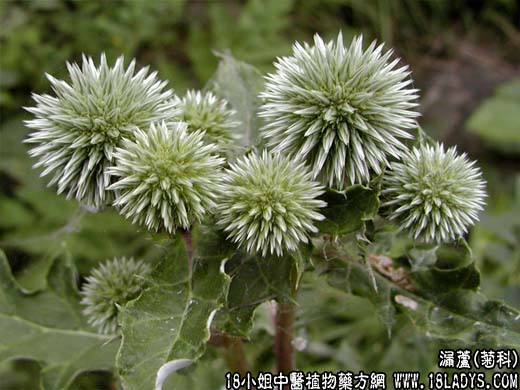

【中药概述】
漏芦为菊科草本植物祁州漏芦等的根。苦、咸，寒。归胃经。
1．清热解毒：用于乳痈及丹毒红肿疼痛等，如（卫生室鉴<漏芦散>）。
2．通下乳汁：用于气血郁滞，乳房作胀、乳汁不下，有行血下乳之效，可与甲珠，王不留行等配伍。
3．湿痹拘挛，有舒筋通脉之效，可与地龙，薏以仁，木瓜，伸筋草之类合用。
【药效鉴别】
漏芦可治疔疮肿毒。兼有消肿下乳之功，为治乳痈常用之品。
【临证应用】
板蓝根5g，漏芦7g，牛蒡子，甘草3g，水煎服，治流行性腮腺炎。
【药理作用】
对中枢神经系统有兴奋作用。本品水煎外用可治皮肤痒疹。
【化学成分】
含挥发油及生物碱（蓝刺头碱等）。
【用量用法】
5——20g，水煎服，或入剂。外用适量。